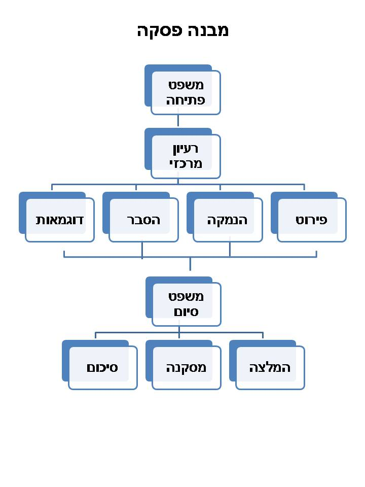

פתיחת הטיעון
בפתיחת הטיעון, אנו נכתוב את את דעתנו לגבי טענת הכותב.
עלינו לכתוב האם אנו מצדדים לטענה, האם אנו מתנגדים אליה או שאנו ניטרלים לגביה.
דוגמאות למילות פתיחה:
מסכים - אני מסכים עם... אני מצדד ב... אני משוכנע ש... לטענתי...
מתנגד - אני מתנגד ל... איני מסכים עם...
ניטרלי - אני סבור ש... אני חושב ש... לפי דעתי...
לטענת הפתיחה, נהוג להוסיף רקע קצר על טענת הכותב - הצגת הענין.
ביסוס הטענות
את הטענה הראשית הכתובה בפתיחה יש לחזק ולבסס. צורך ביסוס הטענה ניתן להשתמש בנימוקים, בהוכחות, בדוגמות, בהשוואה וכדומה.
תפקיד הטיעונים להציג בפני הנמען את נכונות הטענה ואת צדקתה.
מומלץ קודם הכתיבה לעשות טיוטה עם הרעיונות העיקריים של הנימוקים ולאחר מכן להרחיבם לפסקה.
בין נימוק לנימוק, יש לעשות מילות קישור, למשל: ראשית, שני, נוסף על כך, זאת ועוד, יתירה מכך.
טענת נגד
על מנת ליצור חיבור עשיר יותר וטוב יותר, מומלץ להחליף את אחד הנימוקים הרגילים בטענת נגד, כמובן שניתן גם להוסיף.
טענת הנגד, מטרתה היא לקחת טענה שאמורה לסתור את דעת הכותב ולהסביר מדוע אינה נכונה.
על מנת להביא את טענת הנגד יש להשתמש במילת פתיחה, כמו: יש אומרים... יש הטוענים... ועוד...
סיכום
לאחר כתיבת הטענה וביסוס הטענה, יש לסכם את תוכן החיבור. סיכום החיבור לא אמור להיות ארוך.
על מנת לסכם את החיבור בצורה הנכונה יש לכתוב בקצרה את עמדך לגבי טענת הכותב,
יש לסכם את עיקר הנימוקים, ובמקרה שהייתה טענת נגד צריך לסכם גם אותה.
בשביל לפתוח את הסיכום נשתמש במילים כמו: לסיכום, מכל האמור להעיל ניתן לומר, ועוד...